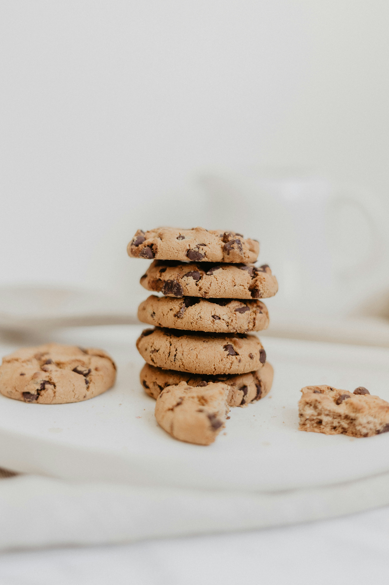

Best Chocolate Chip Cookies

This recipe is from my dad and they are a favorite among friends and family.
The secret ingredient is the coconut! Be warned,
these will fly off of the plate!
Ingredients
- Butter
- White sugar
- Brown sugar
- Eggs
- Vanilla
- Flour
- Baking soda
- Salt
- Chocolate chips
- Oatmeal
- Coconut
Directions
- Preheat the oven to 325°F.
- Beat the butter, sugar, eggs and vanilla together until creamy.
- Mix together the flour, baking soda and salt in a separate bowl.
- Add the flour mixture to the butter mixture slowly.
- Stir in chocolate chips, oatmeal and coconut.
- Bake for 10 minutes or until golden brown.
- Allow the cookies to cool for a few minutes before serving.
Baking Tips
- Use softened butter for easier mixing.
- Do not overmix the dough after adding the flour.
- Leave enough space between cookies on the baking sheet.
- Watch the cookies carefully during the last few minutes of baking.
Serving Suggestions
These cookies are delicious when served warm with a glass of cold milk, coffee, or tea.
Storage
Store leftover cookies in an airtight container at room temperature. They can stay fresh for several days.
Click here to check out my other great recipes.